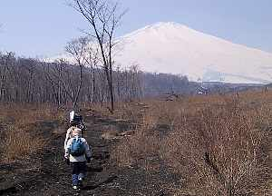
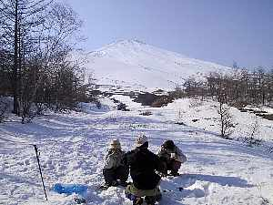

スノーシュー体験 | ２００２．０３．０９ |
|  めざせ富士山 | ＜参加者＞ 登山から：ベッシー、むらべー、ぞう、のび太 夕食から：いづみ 急用のため欠席：ひで ＜日程＞ 6：55 磐田集合 8：00 焼津発 8：30 静岡発 10：35 御殿場登山口から登山開始 13：00 双子山山腹にてテント設営 15：10 テント撤収して、下山 15：55 駐車場に戻る （水ヶ塚・富士川楽座で休憩） 18：30 デニーズで夕食交流会 （〜19：55） 21：50 磐田解散 |
＜総評＞ 御殿場まで一般道で行ったが、渋滞などで予定外に時間が懸かった。 登山のスタート口を、一般ルートと変えたため、薮の中を20分程度歩くこととなった。（タスマンズらしくて、良いかな？） 登山途中で、銀マットの上に腰をおろして休憩したが、傾斜地だったので、ズルズルと滑り落ちそうな状態を、脚で踏ん張りながらの休憩となった。 登山コースの途中から、ビシャビシャの雪が現れ、まずは登りコースでベッシーにスノーシュー体験をしてもらう。（だるそうに歩くのがポイントです。べっしー） 右の写真は、現場でつららが溶ける模様です。 |  つららが！ |
 これがスノーシュー | 1.5時間程度歩いたが、山頂まで時間が懸かりそうだったので、山腹にてテントを設営する。 むらべー・ぞうさんにもスノーシュー＆ワカン体験をしてもらい、テント内で昼食＆休息をする。 テント内から、クロカン・スノボーをやっている姿を見て、「来年はココで、ソリ・クロカンを楽しみたいね」とのことになった。 （いや、やろう！タイヤのチューブでかい奴手に入れて、滑りたい。なだらかな斜面がよさげ） テント撤収しながら、お湯を沸かし、ドリップコーヒー＆紅茶を飲んで、体を温めてから下山する。下りは45分と軽快に速さで歩いてしまった。 |
| 帰りは、水ヶ塚＆富士川楽座で、富士山を眺めながら、楽しかった登山の余韻を味わう。 デニーズで、いづみさんと合流。私（のび太）の強烈なメールを見ての参加だったが、「年齢」のことを気にされていて、50歳前後と33歳のハザマで、ドッチ付かずで困っていた様子だったが、やっぱりいづみさんは生き生きしていて精神年齢が若かったです。問題なく、私達とアウトドアを楽しめると実感した。（のび太：談） 帰りの車中で、沢登りの話題になったが、簡単なコースで日程があえば、ぞうさんも参加したいとのこと。昨年出来なかったから、今年こそ沢登りをやりたいですね。 |  富士をバックに |